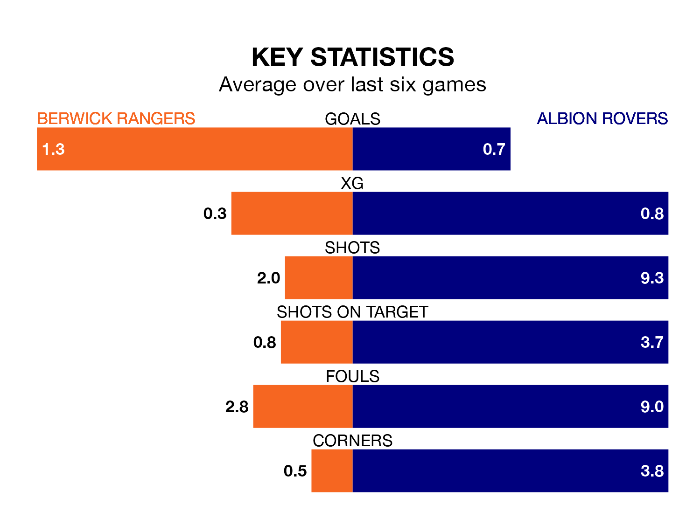

Berwick Rangers welcome Albion Rovers to Shielfield Park on Saturday looking to pick up points to end their three-game losing streak.
Berwick's struggles have left them with six points from their last six Lowland Football League matches, while their opponents have earned four from a possible 18.
In the last 10 years, Berwick and Albion have played each other on 10 occasions. Berwick won two of them, Albion five, and they drew three times.
On average, Berwick scored 1.0 goal and the Wee Rovers 1.5 in those matches.
Their last meeting was on October 21, when Albion won 1-0 at home.
Berwick are 13th in the table after 33 games, of which they have won 12 and drawn five, earning 41 points.
Albion are four places ahead of Rangers in ninth, with 13 wins and nine draws putting them on 48 points.
With 40 goals in 33 games so far this season, the hosts are the league's third-lowest scorers with 1.2 goals per game. But they are conceding fewer than average too, letting in 42 goals at a rate of 1.3 per game.
Rovers are also below average scorers, with 1.3 goals per game, compared to a league average of 1.7. They have conceded 1.0 goal per game.
Berwick's last match was on April 13, a 1-0 loss against East Kilbride.
Albion lost 2-0 against East Kilbride last time out, on Tuesday.
Updated: 15:40 (UTC), 18/04/24